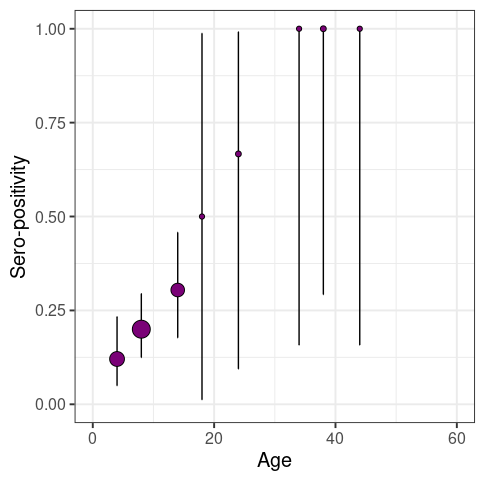
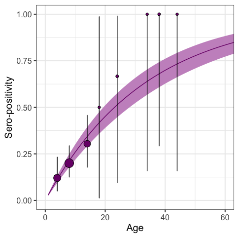
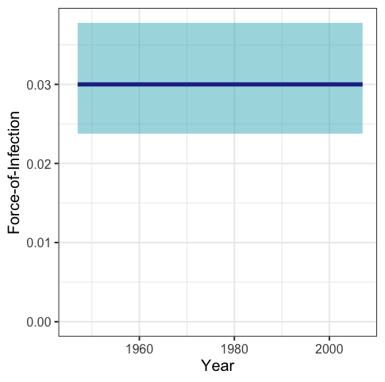
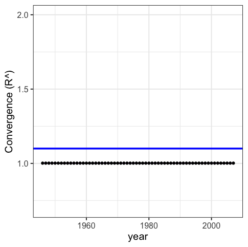
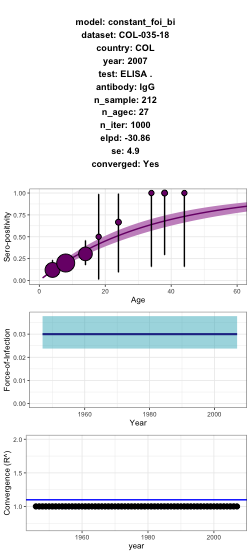

serofoi
serofoi version 0.1.1 is an R package to estimate the Force-of-Infection of a given pathogen from population based sero-prevalence studies on a Bayesian framework.
Installation
You can install the development version of serofoi from GitHub with:
# install.packages("remotes")
remotes::install_github("TRACE-LAC/serofoi")
library(serofoi)Quick start
These examples illustrate some of the current functionalities:
The function prepare_data() helps the user to prepare the dataset for the use of serofoi package
data_test <- prepare_data(mydata)
head(data_test)Current version of the package runs three different models of the FoI. The function run_model() allows to choose betwwen three different models.
- Constant Force-of-Infection with a binomial distribution
model_0 <- run_model(model_data = data_test,
model_name = "constant_foi_bi")- Time-varying Force-of-Infection with a prior normal-binomial distribution
model_1 <- run_model(model_data = data_test,
model_name = "continuous_foi_normal_bi")- Time-varying Force-of-Infection with a prior normal-log distribution
model_2 <- run_model(model_data = data_test,
model_name = "continuous_foi_normal_log")Function plot_seroprev() can be used to visualize the sero-prevalence data with its corresponding binomial confidence interval before fitting to a model:
plot_seroprev(data_test, size_text = 15)
For each model, there are three plotting functions:
plot_seroprev_fitted(model_0)
plot_foi(model_0)
plot_rhats(model_0)
The three plots can be obtained at once with the function plot_model()
plot_model(model_0)
Finally, the package provides a funcion get_comparison_table() allows to compare these three models based on convergence, elpd and p-values
comp_table <- get_comparison_table(
model_objects_list = c(m0 = model_0,
m1 = model_1,
m2 = model_2))
Lifecycle
This package is currently a concept, as defined by the RECON software lifecycle. This means that essential features and mechanisms are still being developed, and the package is not ready for use outside of the development team.
Contributions
Contributors to the project include:
- Zulma M. Cucunubá (author)
- Nicolás Tórres (author)
- Benjamin Lambert (author)
- Pierre Nouvellet (author)
- Miguel Gamez (contributor)
- Jaime Pavlich-Mariscal (contributor)
- Geraldine Gómez (contributor)
Contributions are welcome via pull requests.
Code of Conduct
Please note that the linelist project is released with a Contributor Code of Conduct. By contributing to this project, you agree to abide by its terms.